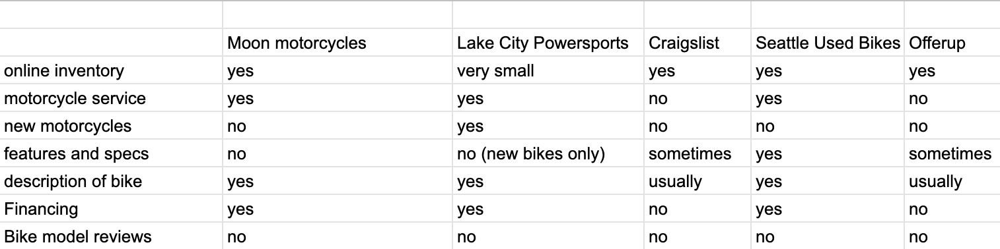

Moon Motorcycles
Website Redesign
Project Overview
This project is a conceptual redesign of a local motorcycle dealership’s website using the UCD process. The business, Moon Motorcycles, sells used motorcycles and wants to increase their online presence in order to bring in more customers.
Roles:
Information Architect, Interaction Designer, Usability Tester.
Duration:
Two weeks.
Research
My first step was to take a deeper look at the Moon Motorcycles website, as well as the websites of two other motorcycle dealerships in the area. I took note of UI elements, navigation, and features that were used for each dealership site. This comparison gave me a good idea of the features that are most important for a motorcycle dealership to have on the website. These include motorcycle inventory, sales information, contact information, service, and an about section. I also got a good ideas as to what the primary navigation for the website redesign would be.
Persona
A persona for this project had already been constructed and given to me to work with. In order to design around John's pain points, I brainstormed features that would address them in terms of a motorcycle dealership website. I also took note of John's needs and goals to inform my design. To sum it all up, I wrote a detailed context scenario about how John would use website. I touched on all of the primary functions of the website and how the new features would complete a seamless experience for John.

Sitemap
At this point, I had enough information to start planning out the different pages that would be in the website. Creating a rough site map with FlowMapp gave me a basic visual representation of the site and was helpful for wireframing as well.

Wireframe
As I wireframed, I pulled from my site map in order to know which pages I would need to sketch out. As I got further along I was able to iterate on my original site map, adding or moving pages as the structure of the website became more clear.
Usability Tasks
Before I could turn my wireframe into a prototype for testing, I needed tasks and scenarios to go with them. I ended up with four tasks that would test the primary features of the website. For each task, I created a screen flow and task scenario to help design the screens. The screen flow was a list of the steps that a user would go through during each task, and the scenario provided specific details for the user to follow.
Prototype
In addition to incorporating details from the task scenarios, I also took the chance to revisit my UI heuristics. Going through every page, I made button appearances as obvious as possible, added arrows and highlights on the nav bar to make it more intuitive, and examined where the fold line would fall on each page. At this point I put my screens up on InVision and added hotspots to make the clickable prototype. By running through each task on my own a few times, I got the prototype as close as possible to a real website before usability testing.
Usability Testing
I conducted three usability tests in order to gauge the success of my UI design and find potential problems. While there were no issues that prevented users from completing any of the tasks, there were some common problems between all of the tests.Luckily, they appear to be simple problems that can be fixed with minimal effort.
One prevalent issue was that users mistook the navigation button labelled "Sales" for motorcycles on sale, when in reality that page contains information about motorcycle sales such as financing, test rides, shipping, and return policy. This issue could be fixed through renaming the page to something more clear, such as "Information" or "Policies".

I also ran into a few issues that were unique to one or two users and will better inform my heuristics evaluation of websites I design in the future. These were issues such as pages that made users uncomfortable because of multiple links that lead to the same place.
Next Steps
Now that the overall layout and interactions of the website have been designed and tested, it is time to start with visual design and building the site. In order to make sure everything is meeting the client's expectations, the design should be verified with them as well. To assure that the site meets user expectations, another round of usability testing during the visual design phase is necessary.